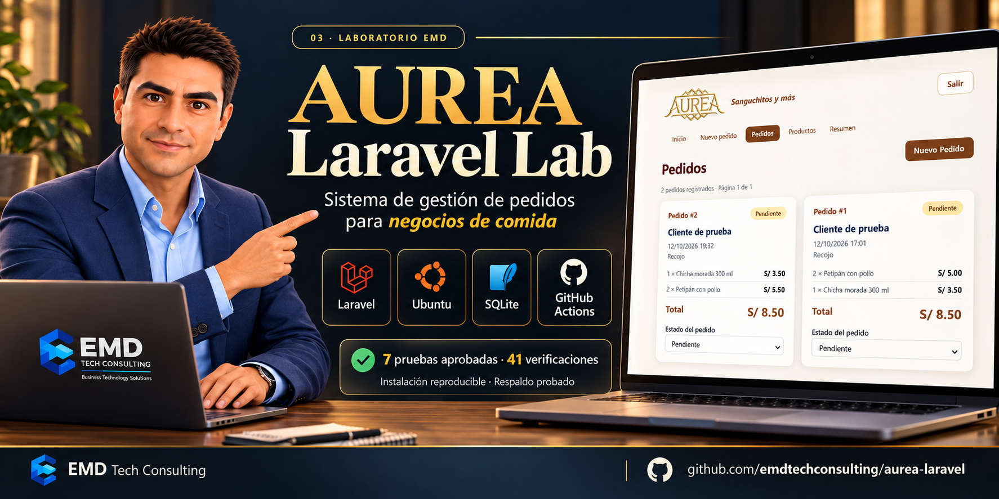

LABORATORIO VALIDADO
AUREA Laravel Lab
Sistema de pedidos para un negocio de comida. Catálogo editable, recojo y delivery, estados y resumen diario con identidad visual de AUREA.
Laravel / PHPSQLiteUbuntu / NginxGitHub Actions
- 7
- pruebas aprobadas
- 41
- verificaciones
Instalación local reproducida desde GitHub y recuperación de respaldo comprobada. La aplicación funciona en el laboratorio local.